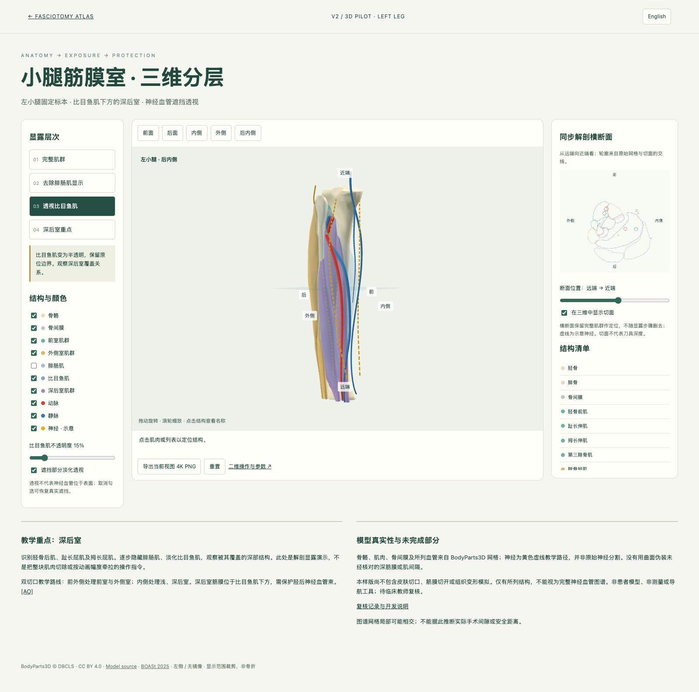
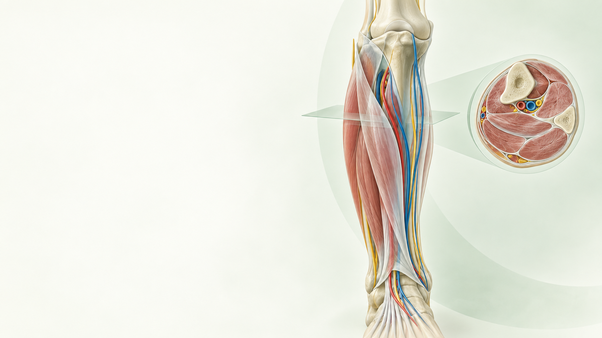
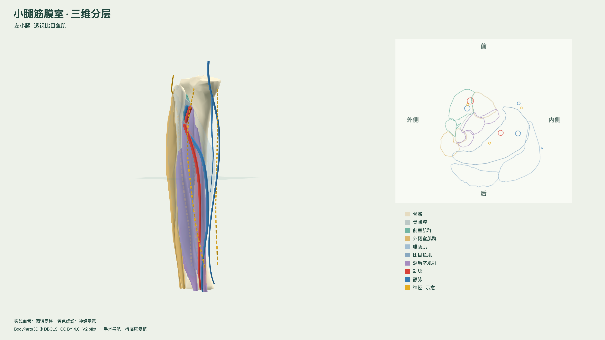
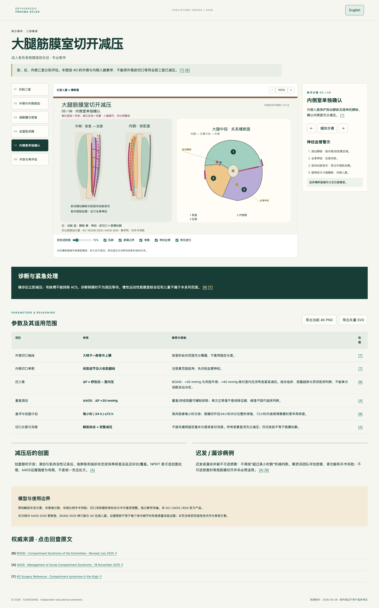
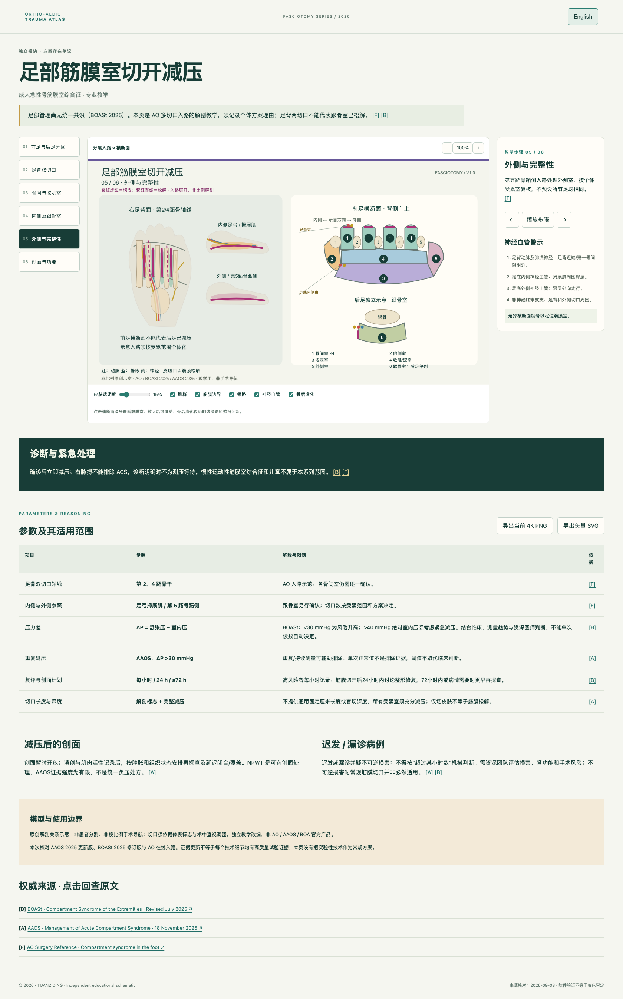

01
识别解剖
Read the anatomy
先看骨骼、肌群、筋膜边界和横断面，让学员知道自己正在看哪里。
Start with bone, muscle, fascial borders and cross-sections so learners know where they are.
OPEN ORTHOPAEDIC TEACHING ATLAS
把复杂解剖，讲成一条可以演示的教学路径。
Turn complex anatomy into a teachable path.
从骨性标志与筋膜层次开始，按步骤展开操作，再回到神经血管风险、影像复核与停止条件。面向课堂投屏、术前复习和技能训练。Reference anatomy, procedural sequence, structures at risk, imaging checks and stop conditions in one teaching flow.
Reference anatomy, procedural sequence, structures at risk, imaging checks and stop conditions in one teaching flow.Built for classroom projection, pre-procedure review and skills training.


真实教学截图 · 小腿筋膜室三维分层试验Teaching screenshot · layered leg pilotA STRUCTURED PATH FOR TEACHING
先建立空间关系，再进入操作层次；每一步都能暂停、讲解、回看，并回到来源与边界。
Build spatial relationships first, then move into procedural layers. Pause, explain, revisit, and return to sources and limits.

先看骨骼、肌群、筋膜边界和横断面，让学员知道自己正在看哪里。
Start with bone, muscle, fascial borders and cross-sections so learners know where they are.

从骨性标志、入钉点或筋膜层次进入，明确每一步的目的与停止点。
Move from landmarks and entry points into fascial layers, with a stated purpose and stop point.

在同一视野中标出神经、动脉和静脉，说明哪些结构会改变入路判断。
Keep nerves, arteries and veins in view and explain how they change the approach.

回到横断面、影像和停止条件，明确示意图不能替代患者级判断。
Return to cross-sections, imaging and stop conditions; the drawing is not patient-specific guidance.
AAOS 2025 明确要求结合个体临床情况判断；页面只呈现教学定位和证据边界。
AAOS 2025 states that care depends on individual clinical circumstances; this atlas keeps the teaching boundary visible.
AAOS 2025 ↗AO 的入钉与安全区页面把神经血管关系放在入路判断之前。
AO safe-zone references place neurovascular relationships before pin or approach decisions.
AO safe zones ↗模型为教学关系示意，不提供患者级安全距离、导航或器械认证。
Models show relationships for teaching; they do not provide patient-specific distances, navigation or device certification.
查看使用边界 ↓View limits ↓BROWSE BY CASE
每个模块都保留中英文、三维或分步图、神经血管提示、来源和适用限制。
Every module keeps bilingual copy, 3D or stepwise plates, neurovascular cues, sources and limits.
Lower-limb fasciotomy · anatomy → exposure → protection
以固定左小腿为教学对象，逐层显示浅后室与深后室，并把横断面、神经血管深度提示和操作步骤放在同一工作区。适合讲解“看见结构，再决定下一步”。
Uses a fixed left-leg teaching model to show superficial and deep posterior layers, cross-section and depth-aware neurovascular cues in one workspace.
02Supra-acetabular and iliac-crest fixation
把髂前下棘、髂嵴与股外侧皮神经放进同一张入钉路径中；前环稳定不等于后环损伤已解决。
Relates AIIS, iliac crest and the lateral femoral cutaneous nerve; anterior-ring control does not resolve associated posterior injury.
03Entry direction and posterior neurovascular context
重点辨认腓总神经、胫神经和腘血管；入口、方向与出口必须一起核对。
Highlights the common fibular nerve, tibial nerve and popliteal vessels; entry, direction and exit must be checked together.
 04
04Medial bundle and lateral exit risks
内侧显示胫后神经血管束与跟支，外侧提醒腓肠神经；不能只背一个进针方向。
Shows the posterior tibial bundle and calcaneal branches medially while keeping the sural nerve risk visible laterally.
 05
05Superficial vessel risk and cervical monitoring
把浅表血管风险与颈椎创伤监测分开讲，不把深部结构画成颅骨针的安全通道。
Separates superficial vessel risk from cervical-trauma monitoring; deep structures are not skull-pin corridors.

06Three compartments · medial and lateral approaches
按外侧与内侧入路逐室展开，强调穿支和坐骨神经等邻近风险，不把一条切口当作三室的自动答案。
Walks through lateral and medial approaches with perforator and sciatic-nerve context; one incision is not an automatic release of all three compartments.

07Forefoot and hindfoot boundaries
分开讲前足与后足跟骨室，保留足背、内侧和外侧入路的差异与共识不足。
Separates forefoot from the hindfoot calcaneal compartment while preserving approach differences and the lack of consensus.
READY FOR THE CLASSROOM
每次讲授都可以从同一组问题开始：看见了什么？下一步如何进入？哪些结构必须保护？哪些结论需要影像、个体评估或临床复核？
Start every lesson with the same questions: what is visible, how do we enter, what must be protected, and which conclusions still require imaging, patient-specific assessment or clinical review?
EVIDENCE & LIMITS
真实医学内容只从公开权威来源和模块证据文件进入页面；不把示意结构、软件验证或 AI 辅助写成临床认证。
Medical content is tied to public authoritative sources and module evidence files; schematics, software checks and AI assistance are not presented as clinical certification.
主要来源：AAOS 2025、BOASt、AO Surgery Reference、WFNS；模块证据见 fasciotomy evidence 与 neurovascular V2 notes。
Core sources: AAOS 2025, BOASt, AO Surgery Reference and WFNS. Module evidence: fasciotomy evidence and neurovascular V2 notes.